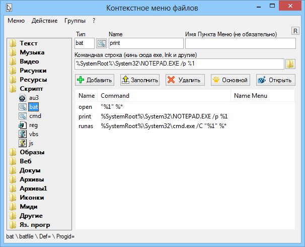

AutoIt3
ContMenuFiles
Назначение
Настройка контекстного меню файлов (ассоциации, значки).

Взаимосвязанные
ContMenuFilesПеред выполнением изменений в реестре рекомендуется сделать резервную копию всех расширений (Группы -> Экспорт всех расширений).
"Меню -> Показать отсутствующие" - поможет определить отсутствующие расширения файлов в текущей OS. Через разделитель указаны существующие расширения, но не ассоциированные, т.е. не открывающиеся в программе при клике на файле.
Типы файлов упорядочены по группам. Некоторые группы используют одинаковый набор программ для открытия в них, поэтому очень удобно применять операцию к группе. Например, если вы выбираете "Добавить пункт в группу", то эта операция добавит данные из полей ввода не только к указанному расширению, а к группе, в которой это расширение находится. Требуется выбрать группу или расширение в списке слева и заполнить поля. Для удаления требуется выбрать пункт в списке. Аналогично и для установки пункта основным.
По умолчанию основным пунктом является Open или если его нет, то первый в списке с учётом сортировки по алфавиту. Это пункт который используется, когда выполняется клик на файле. Если пунктов более двух, то имеет смысл назначить один из пунктов основным, если он таковым не является.
В реестре два раздела HKCU и HKLM содержат два аналогичных раздела HKEY_CURRENT_USER\Software\Classes и HKEY_LOCAL_MACHINE\SOFTWARE\Classes, первый используется для текущего пользователя, второй для всех пользователей. Эти два раздела объединяются в один общий раздел HKCR или полное имя HKEY_CLASSES_ROOT. При использовании HKCR данные фактически записываются в один из разделов HKCU или HKLM, при чём данные из HKCU имеют приоритет, если данные содержаться в обоих разделах. То есть запись будет выполнятся в HKCU. Если в HKCU указанного для записи раздела не существует, то запись выполняется в HKLM. Отсюда вывод, при добавлении новых данных они добавляются в HKLM, то есть для всех пользователей. Рекомендуется использовать HKCR в большинстве случаев. Но если требуется изменить данные только для текущего пользователя, то нужно выбрать HKCU. Если требуется принудительно изменять данные для всех пользователей, то использовать HKLM. Здесь нюанс, если используется HKLM, то ваши текущие настройки в HKCU перекрывают настройки HKLM и визуально изменения могут не произойти.
При чтении реестра используется всегда HKCR. При экпорте в reg-файл тоже используется HKCR, так как обратный импорт reg-данных выполнит изменения согласно текущему приоритету.
Клавиша "Enter" в полях ввода упрощает некоторые операции. При вводе отсутствующего расширения и нажатии Enter выполнится чтение данных этого расширения. В других полях ввода при нажатии Enter выполняется добавление данных в реестр из полей ввода. При нажатии Enter в списке на пункте, откроется папка, в которой находится указанная в пункте программа. Другие горячие клавиши указаны во всплывающих подсказках.
Если выбрать расширение в списке, то на кнопке устанавливается соответствующая иконка. Нажатием на кнопку вызывается диалог выбора файла иконки. Так как иконки находятся в кэше, то для того чтобы увидеть изменения нужно в меню выбрать пункт "Меню -> Обновить все иконки". Для более удобного управления иконками лучше воспользоваться моей утилитой Recovery_associative_icons, которая может сохранить или восстановить все иконки практически одним кликом.
"Меню -> Открыть ContMenuFiles.ini" открывает ini-файл настройки в блокноте. Здесь вы можете изменить название групп, их количество, расширения в группе и их количество. Тем самым построив список слева по своим предпочтениям.
Некоторые расширения (например WMA) вызывает проблему, система восстанавливает первоначальные ассоциации. В этом случае использовать раздел HKCU, только для этого расширения, а не для всех.
Для некоторых расширений в правом нижнем углу может появится кнопка для удаления Progid. Нажатием этой кнопки можно удалить запись, если она не даёт возможности ассоциировать программу.